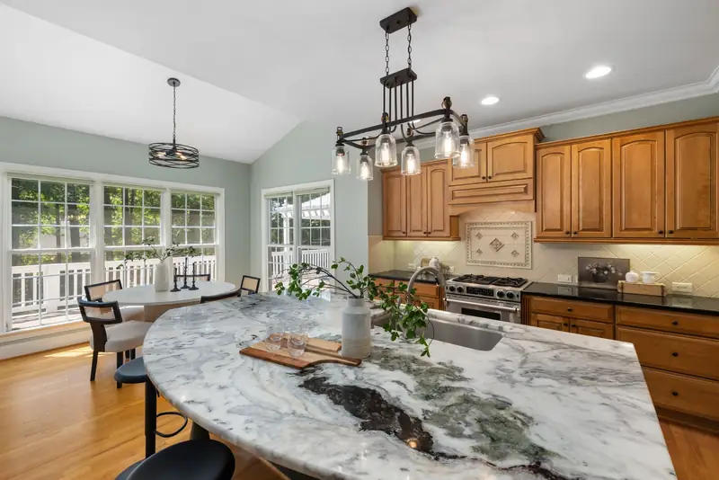
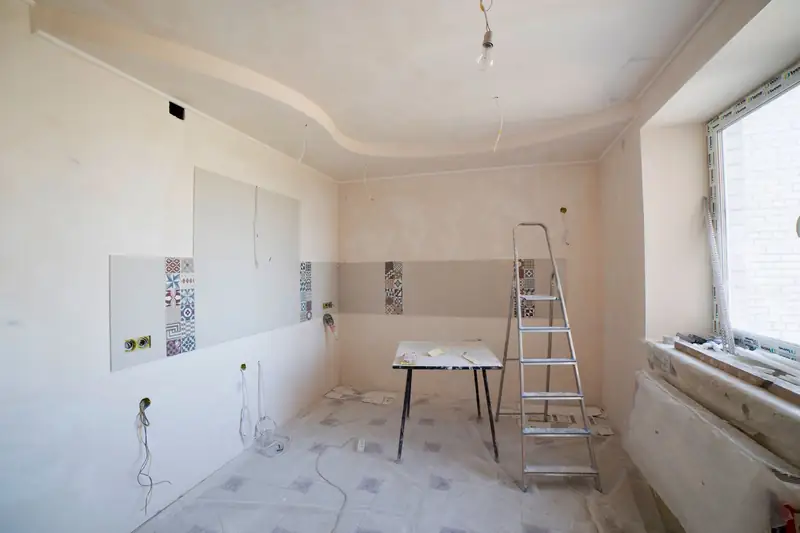
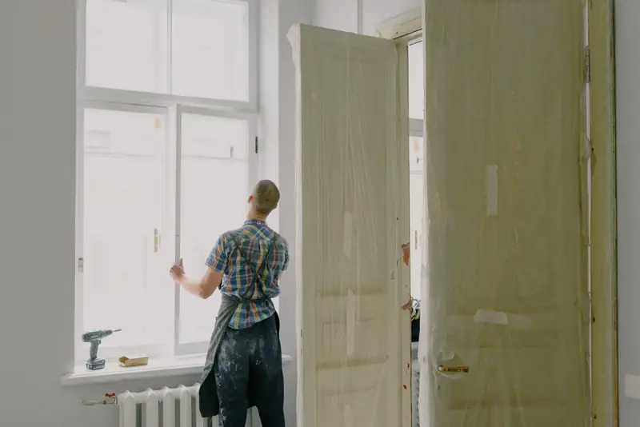
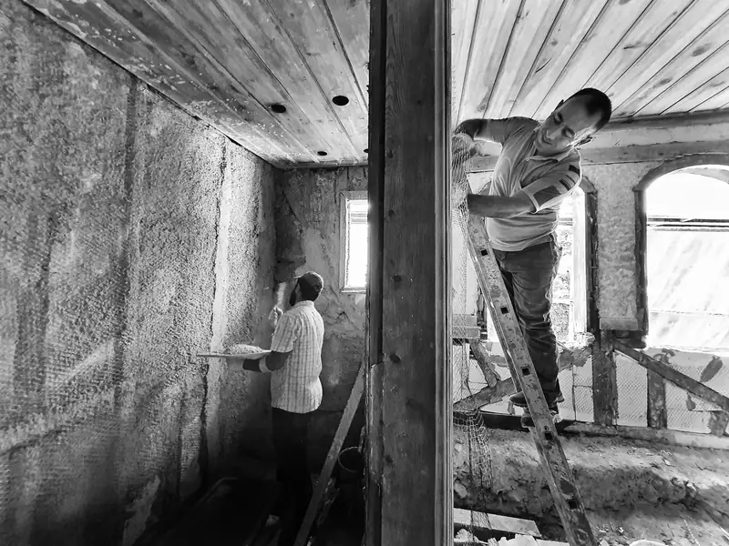
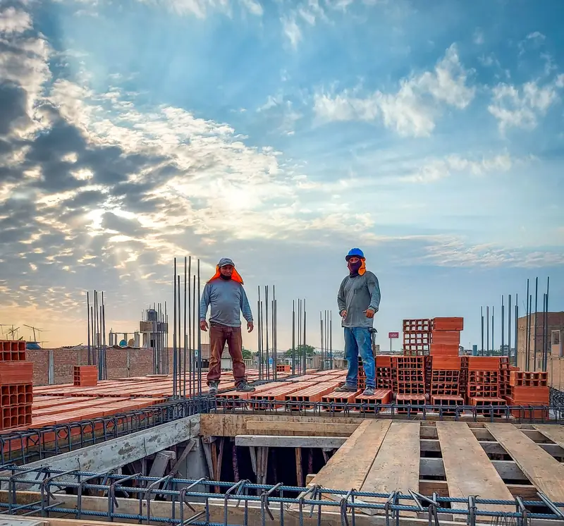

Completed projects · built properly
Finished work you can walk through.
Kitchens, extensions and fit-outs, delivered on the plan and handed over clean. See the projects, then tell us about yours.

Selected projects
Look closely. That’s the point.
Project page · case study Sample content
Open kitchen, stripped back and rebuilt

BeforeOpen the room up and add storage.
New layout, cabinetry, benchtops, lighting.
Six weeks, on the agreed plan.
The old kitchen was dark and closed in. We took it back to the frame, moved the sink to the window, and built storage into every wall. Light now reaches the whole room.
Services Sample content
What we build, in plain words.

Renovations
Kitchens, bathrooms and whole-room refits, from strip-out to final clean.

Interior works
Walls, ceilings, joinery and finishes done to a high standard.

New builds & extensions
Structure through to handover, with one point of contact.
Contact
Tell us about the job. We’ll take it from here.
A few details are enough to start. We reply from the business email, usually the same working day.
After hand-over · your CMS
Add a new project in five minutes.
Upload photos, write a few lines, press publish. The project page and the grid update themselves.
New project Sample content
Going live, email included
Website and mail move together, with nothing lost.
1. Website
- Build and review on a staging link
- Publish on your domain
- Hand over CMS access
2. Email to Google Workspace
- Accounts and aliases set up
- Messages and folders migrated
- Test send and receive
3. DNS and hand-off
- Web and mail records updated
- Verified after cut-over
- A short hand-off guide